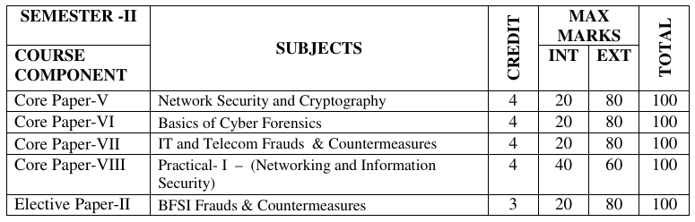

MSc. CF-IS Notes Portal
🌙
🕵🏿 Semester II PDF Books
●

📄 Library
Category
All
Semester II
Library
Sort
A–Z
Z–A
Newest first
Search notes
Reset
Loading PDFs…
No matching PDFs found.
Failed to load PDFs. Try again later.
🔗 Important Links
Old Question Paper Portal
Online Study Materials